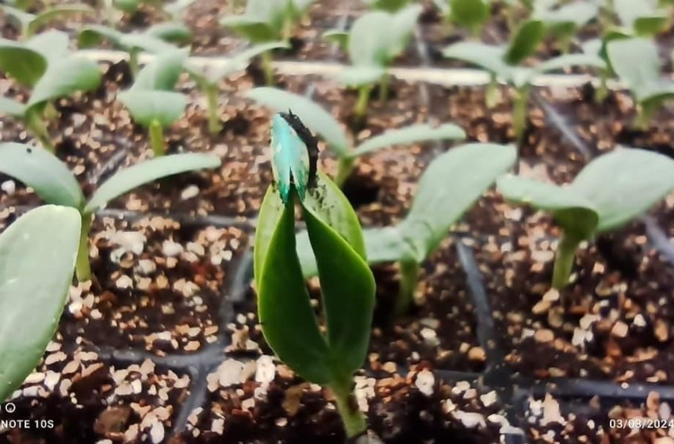
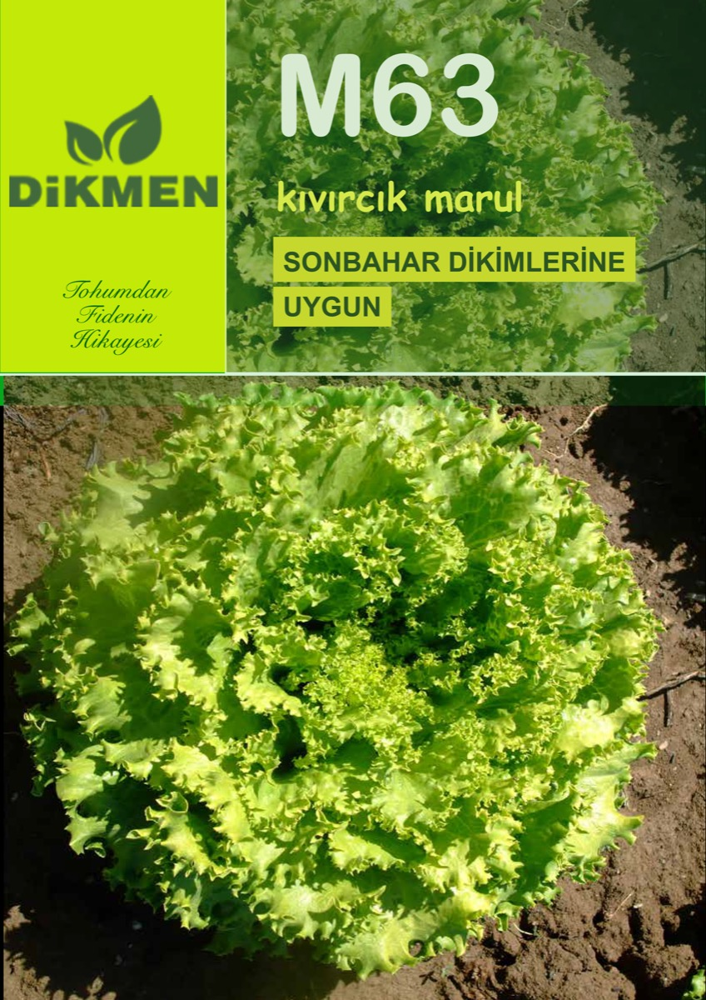
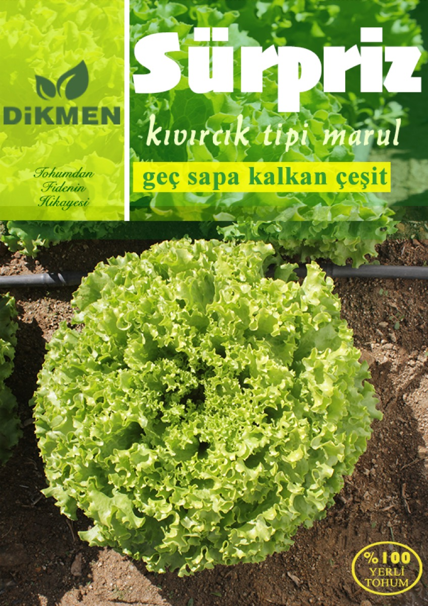
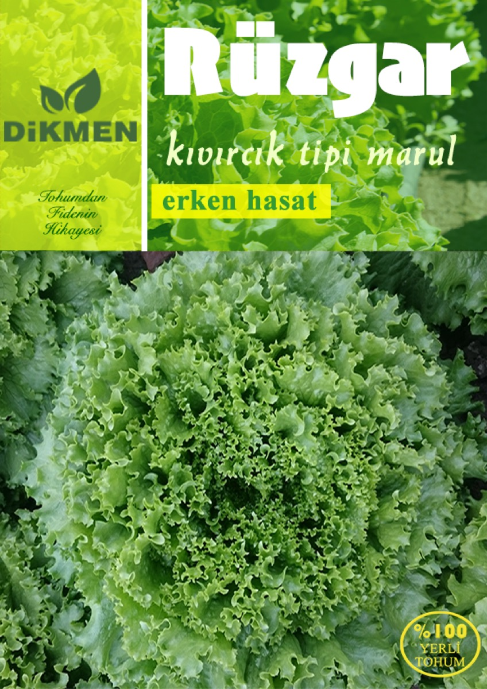

Domates Fidesi
Sofralık, salkım ve sanayilik çeşitlerde güçlü ve sağlıklı fideler.
Domates, biber, patlıcan, marul ve onlarca sebze çeşidinde; Söğüt/Bilecik'teki 18.000 m² modern fidelik tesislerimizde, uzman ekibimizle ürettiğimiz güçlü ve sağlıklı fidelerle tarlanıza değer katıyoruz.

Dikmen Tarım Ürünleri olarak 1994'ten bu yana fidecilik sektöründeyiz. Söğüt/Bilecik'teki 18.000 m²'lik iklim kontrollü fidelik tesislerimizde, tohum seçiminden köklendirmeye kadar her aşamayı titizlikle yönetiyor; çiftçilerimize hastalıklardan arındırılmış, güçlü kök yapısına sahip, yüksek verimli fideler sunuyoruz.
Bizim için her fide bir taahhüttür: Tarlanızdaki bereketin sorumluluğu.
Dikmen Fide markamızla; sofralık ve sanayilik tüm çeşitlerde, açık tarla ve sera üretimine uygun fide seçenekleri.
Sofralık, salkım ve sanayilik çeşitlerde güçlü ve sağlıklı fideler.
Sivri, çarliston, dolmalık ve kapya biber çeşitlerinde güçlü fideler.
Kemer, topan ve bostan patlıcanı çeşitlerinde yüksek verimli fideler.
M63, Sürpriz, Rüzgar ve Poyraz dahil kıvırcık ve yağlı marul çeşitleri.
Maydanoz, roka ve dereotu dahil taze yeşillik fideleri.
Sera ve tarla tipi hıyar çeşitleri, turşuluk kornişon fideleri.
Joker F1 ve çekirdeksiz Pamela F1 karpuz, Eylül F1 galia kavun fideleri.
Wisdom F1 brokoli, İlkkar F1 karnabahar, sarmalık ve kırmızı lahana fideleri.
Kabak, çilek, pırasa ve kereviz dahil onlarca çeşit.
Tohumda çözüm ortağımız Casta Tarım'ın sertifikalı çeşitleriyle üretim yapıyoruz. Aradığınız çeşit listede yok mu? Bize sorun — sipariş üzerine özel üretim yapıyoruz.
Kendi markamızla yetiştirdiğimiz, bölgemizin iklimine kanıtlanmış uyum gösteren marul çeşitlerimiz.



Her fide, kontrollü ve izlenebilir bir üretim sürecinden geçerek size ulaşır.
Yalnızca sertifikalı, yüksek çimlenme oranına sahip tohumlarla çalışırız.
Çimlendirme odalarında ısı ve nem hassasiyetle yönetilir.
Ziraat mühendislerimizin denetiminde sulama, gübreleme ve hastalık takibi yapılır.
Fideler dikime hazır dönemde, özenli paketleme ile adresinize teslim edilir.
2014 yılında Bilim, Sanayi ve Teknoloji Bakanlığı Verimlilik Ödülü'ne layık görüldük.
Ziraat mühendisi kadromuz her partide toprak, su ve bitki analizleri yapar.
Türkiye'nin her bölgesine, fide sağlığını koruyan araçlarla zamanında sevkiyat.
Fideniz tarlaya indikten sonra da yanınızdayız; ücretsiz teknik danışmanlık veriyoruz.
Borcak Köyü, Söğüt / Bilecik — dağların arasında 18.000 m² fidelik tesisi
Sipariş, fiyat teklifi veya teknik danışmanlık için bize her kanaldan ulaşabilirsiniz.